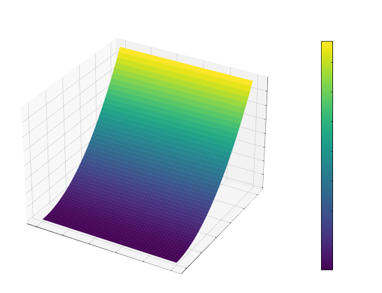
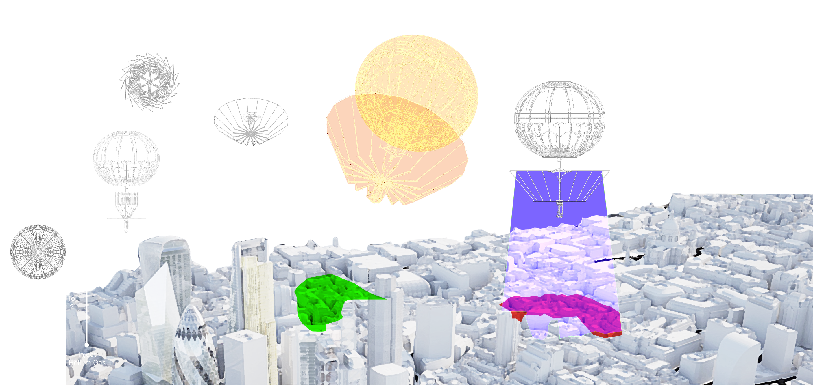
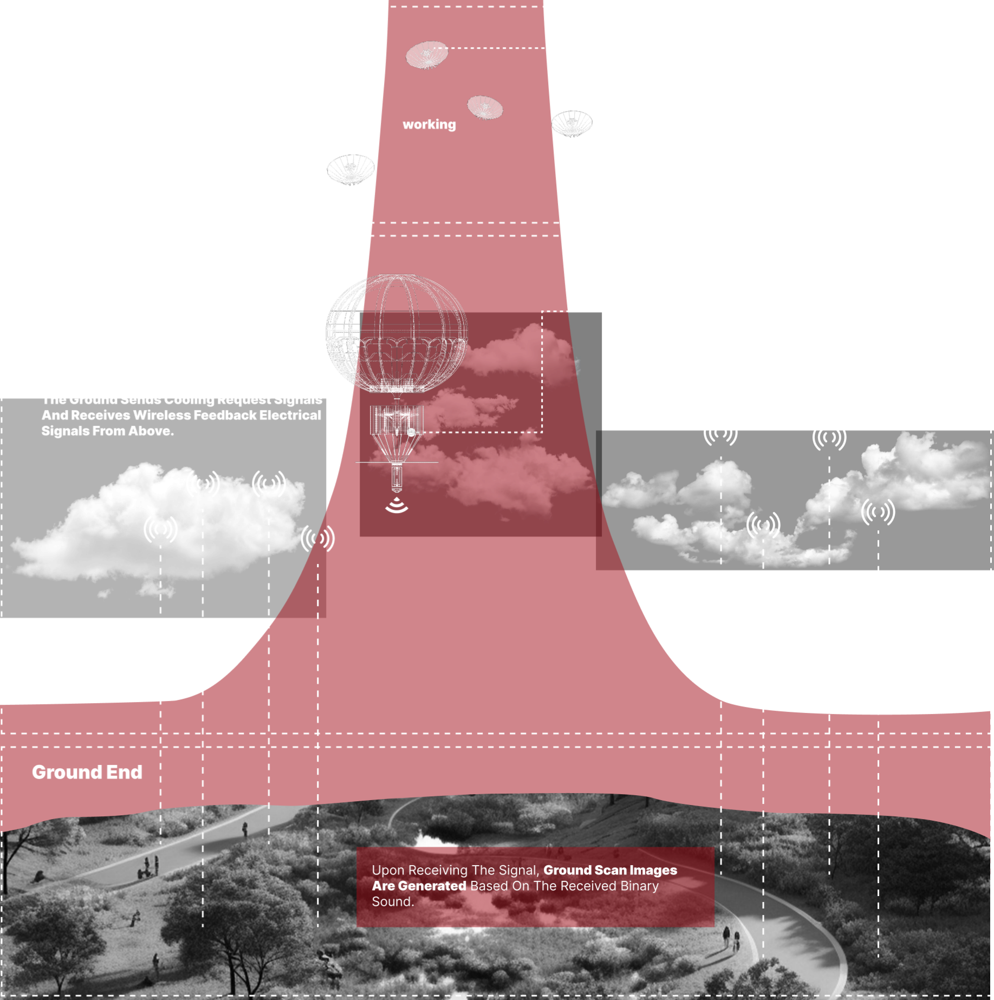
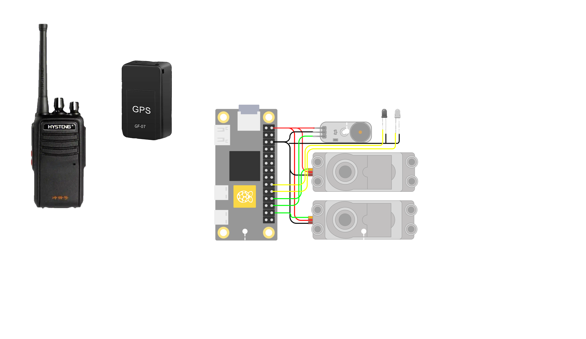

In modern urban ecosystems, the natural rhythms of plant life cycles have been disrupted; in some instances, vegetation is even directly severed or removed by municipal authorities. Functional plant components—such as fallen leaves, pollen, blossoms, and seeds—often impose numerous intractable negative impacts on the daily lives of residents, leading to their frequent classification as "waste" and subsequent disposal within urban areas. This system has been custom-designed to address the sustainable utilization of urban organic waste. It comprises three core modules: an intelligent prediction system, smart collection equipment, and personnel operations management. The system aims to provide relevant industries with a more efficient and human-centric operational model, thereby fostering continuous development and refined management within the field of environmental stewardship.
Integrated with urban public environmental management agencies, this system enables the real-time monitoring of environmental and climatic data. Through data collection, comparative analysis, and AI-driven simulations, it achieves intelligent prediction and monitoring of the specific timeframes during which plants' fluff dispersal is expected to surge—thereby assisting users in executing organic waste collection workflows with precision and efficiency.


Integrated with urban public environmental management agencies, this system enables the real-time monitoring of environmental and climatic data. Through data collection, comparative analysis, and AI-driven simulations, it achieves intelligent prediction and monitoring of the specific timeframes during which plants' fluff dispersal is expected to surge—thereby assisting users in executing organic waste collection workflows with precision and efficiency.

In modern urban ecosystems, the rhythm of plant lifecycles has been disrupted, and in some cases, plants are directly severed or removed by the city. Plant functional organs such as fallen leaves, pollen, flowers, and seeds have brought numerous irreconcilable harmful effects to residents' lives, leading them to often be regarded as “waste” and discarded in urban areas.


In modern urban ecosystems, the rhythm of plant lifecycles has been disrupted, and in some cases, plants are directly severed or removed by the city. Plant functional organs such as fallen leaves, pollen, flowers, and seeds have brought numerous irreconcilable harmful effects to residents' lives, leading them to often be regarded as “waste” and discarded in urban areas.